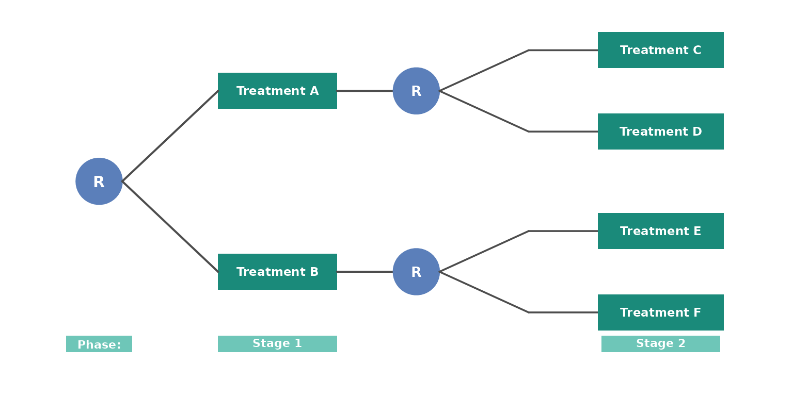
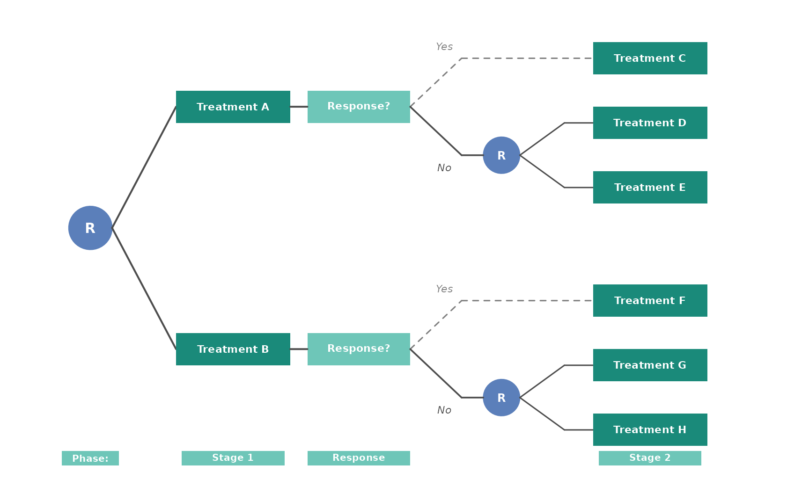
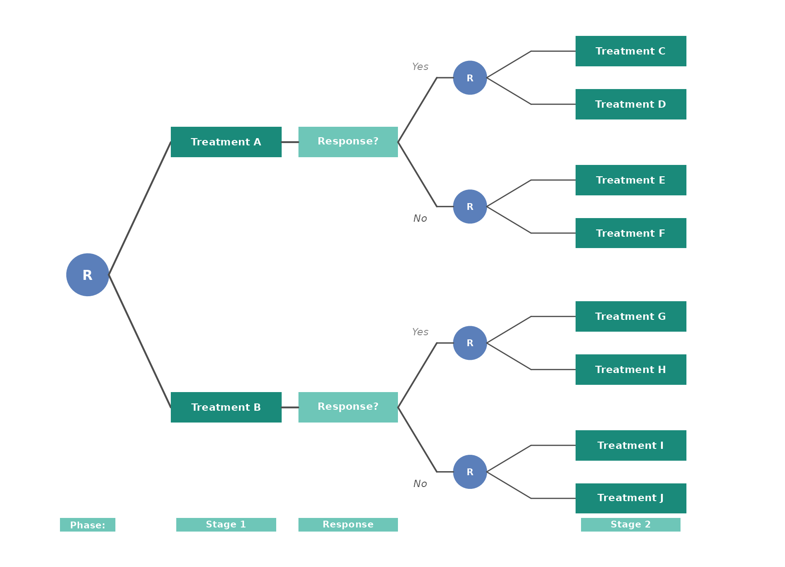

Simulating SMART designs with sim_treatment
Building two-stage SMARTs step by step
Source:vignettes/sim-smart.Rmd
sim-smart.RmdIntroduction
The sim_treatment() function provides a flexible way to
simulate treatment assignments one stage at a time. It can be used to
simulate various common SMART designs, including those with response
indicators or feasible sets. An additional function
block_rand() can implement permuted block randomization to
ensure greater balance than binomial randomization in later stages.
This vignette walks through three two-stage designs:
- No response status — all participants are re-randomized at stage 2.
- Response, non-responders only — a response indicator is observed between stages and only non-responders are re-randomized.
- Response, everyone re-randomized — a response indicator is observed but both responders and non-responders receive a new randomization at stage 2.
The first stage helps to build our intuition in the simplest case. The second and third showcase additional features of the function. Each section includes a diagram of the design, sample simulation code, and the resulting data.
Design 1: No response status
In the simplest two-stage SMART, every participant is randomized at stage 1 and again at stage 2 regardless of any intermediate outcome. This design has four embedded treatment regimes.

Design 1: Two-stage SMART without a response. All participants are re-randomized at stage 2.
This design has four embedded regimes: (A, C), (A, D), (B, E), and
(B, F), which will be encoded as (a1=0, a2=0),
(a1=0, a2=1), (a1=1, a2=0),
(a1=1, a2=1), respectively, using
sim_treatment().
Simulation
Consider a possible trial with 500 participants. The age
of participants is recorded at entry and their compliance with treatment
at stage 2. We assign treatments with equal randomization using a
permuted block design.
We provide sim_treatment() with:
-
n_treatments: the number of treatments available at the stage for randomized participants -
dat: a dataset with the initial covariates and IDs at the first stage -
stage: the stage of the trial that treatments should be assigned for -
rand_prob_fn: theblock_randfunction to generate permuted block randomization, with each treatment repeated twice in a block
The block_rand function here will use a block size of 4
so a sample block could be 2 1 1 2. This will ensure that
treatment imbalance between groups is minimized.
Because there is no response status, the input
randomize_response is implicitly left at its default
(NULL).
The function will return the data frame with the treatment assignment for each participant.
set.seed(42)
n <- 500
# Start with baseline data
dat1 <- data.frame(
id = 1:n,
x1 = round(runif(n, 25, 75)), # age
x2 = rbinom(n, 1, 0.9) # treatment compliance
)
# Stage 1: block randomization
dat1 <- sim_treatment(n_treatments = 2, dat = dat1, stage = 1,
rand_prob_fn = block_rand(block_rep = 2))
# Stage 2: everyone is re-randomized within a1 groups (no response)
dat1 <- sim_treatment(n_treatments = 2, dat = dat1, stage = 2,
rand_prob_fn = block_rand(block_rep = 2))
table(dat1$a1, dat1$a2)
#>
#> 0 1
#> 0 124 126
#> 1 125 125
head(dat1)
#> id x1 x2 a1 a2
#> 1 1 71 1 1 0
#> 2 2 72 1 0 1
#> 3 3 39 1 1 1
#> 4 4 67 1 0 1
#> 5 5 57 1 1 0
#> 6 6 51 1 0 0We see that the resulting data set has the columns id, x1, x2, a1,
a2. The treatments are appended as a<stage>.
Design 2: Only non-responders are re-randomized
Commonly, tailoring variables are used in SMARTs to determine
sequential treatment options. A response indicator is observed between
stages and then governs available treatements. Often, it may be
unethical to re-randomized away from a treatment that is working well
and responders are given a second stage treatment deterministically.
Alternatively, non-responders may be discontinued or given a single
salvage therapy. Here we encode this status using r2 and
will assign responders r2 = 1 a single treatment (coded
a2 = 0). Non-responders will be re-randomized.
In the case where responders are randomized and non-responders are
not, then the encoding of r2 = 1 represents non-responders
and the function sim_treatment will assign responders, now
encoded as r2 = 0, treatments.

Design 2: Two-stage SMART where only non-responders are re-randomized at stage 2.
Responders follow a deterministic path (dashed lines). There are
still four embedded regimes, but now follow rules “give treamtent 1 at
stage 1, if response give treatment 2 at stage 2, otherwise give
treatment 3 at stage 2. (1, 2, 3)” The embedded regimes are now encoded
as: (a1=0, a2=0, a2=0), (a1=0, a2=0, a2=1),
(a1=1, a2=0, a2=0), (a1=1, a2=0, a2=1).
Simulation
We use similar inputs as before, but with the additional input
randomize_response = "N" so that we assign
a2 = 0 to all responders and randomize only the
non-responders within each a1 group.
set.seed(42)
n <- 500
dat2 <- data.frame(
id = 1:n,
t1 = sort(round(runif(n, 0, 365 * 2))), # enrollment day
x1 = round(runif(n, 25, 75)) # age
)
# Stage 1: block randomization (data sorted by t1)
dat2 <- sim_treatment(n_treatments = 2, dat = dat2, stage = 1,
rand_prob_fn = block_rand(block_rep = 2))
# Generate response and stage 2 timing
dat2$r2 <- rbinom(n, 1, 0.5)
dat2$t2 <- dat2$t1 + 100 + round(runif(n, -10, 10))
# Sort by t2 before stage 2 randomization (see note below)
dat2 <- dat2[order(dat2$t2), ]
# Stage 2: only non-responders re-randomized
dat2 <- sim_treatment(n_treatments = 2, dat = dat2, stage = 2,
rand_prob_fn = block_rand(block_rep = 2),
randomize_response = "N")
table(dat2$a1, dat2$a2, dat2$r2,
dnn = c("a1", "a2", "r2"))
#> , , r2 = 0
#>
#> a2
#> a1 0 1
#> 0 58 58
#> 1 62 63
#>
#> , , r2 = 1
#>
#> a2
#> a1 0 1
#> 0 134 0
#> 1 125 0Because of the use of the permuted block randomization, we see that
among responders and conditioned on the first treatment, there is
relative balance between treatment assignments. All responders
r2 = 1 received a2 = 0.
Design 3: Both responders and non-responders re-randomized
In some SMARTs, all participants are re-randomized at stage 2, with treatments allowed to vary by response status. This means responders may or may not receive different second-stage treatments than non-responders, and the randomization probabilities or allocation schedules can differ between the two groups.

Design 3: Two-stage SMART where both responders and non-responders are re-randomized at stage 2.
Because both responders and non-responders are randomized at stage 2, the number of embedded regimes grows. With the canonical encoding, each regime specifies a stage-1 treatment, a responder stage-2 treatment, and a non-responder stage-2 treatment, yielding \(2 \times 2 \times 2 = 8\) embedded regimes. For completeness, we can enumerate these regimes as follows:
- (0, 0, 0)
- (0, 0, 1)
- (0, 1, 0)
- (0, 1, 1)
- (1, 0, 0)
- (1, 0, 1)
- (1, 1, 0)
- (1, 1, 1)
Again, using the same format where these are the treatments given at stage 1, at stage 2 for responders, and at stage 2 for non-responders.
Simulation
Setting randomize_response = "Y" includes the response
column r2 in the grouping variables so that randomization
is performed independently within each combination of a1
and r2.
set.seed(42)
n <- 500
dat3 <- data.frame(
id = 1:n,
t1 = sort(round(runif(n, 0, 365 * 2))),
x1 = round(runif(n, 25, 75))
)
# Stage 1
dat3 <- sim_treatment(n_treatments = 2, dat = dat3, stage = 1,
rand_prob_fn = block_rand(block_rep = 2))
# Generate response and timing
dat3$r2 <- rbinom(n, 1, 0.5)
dat3$t2 <- dat3$t1 + 100 + round(runif(n, -10, 10))
# Sort by t2 before stage 2
dat3 <- dat3[order(dat3$t2), ]
# Stage 2: responders AND non-responders randomized (stratified by response)
dat3 <- sim_treatment(n_treatments = 2, dat = dat3, stage = 2,
rand_prob_fn = block_rand(block_rep = 2),
randomize_response = "Y")
table(dat3$a1, dat3$a2, dat3$r2,
dnn = c("a1", "a2", "r2"))
#> , , r2 = 0
#>
#> a2
#> a1 0 1
#> 0 58 58
#> 1 62 63
#>
#> , , r2 = 1
#>
#> a2
#> a1 0 1
#> 0 67 67
#> 1 62 63Unlike Design 2, responders now receive both a2 = 0 and
a2 = 1. We again see that conditioned on response status
and first treatment, the a2 assignments are relatively
well-balanced.
Note on ordering and block randomization
When using block_rand() (or any
allocation-schedule–based randomization), the order in which
participants appear in the data frame determines their position in the
allocation schedule. If enrollment timing matters — for example, in a
group sequential design — the data should be sorted by the
relevant time variable before calling
sim_treatment() at each stage.
For stage 1, sort by the enrollment time (e.g., t1):
dat <- dat[order(dat$t1), ]
dat <- sim_treatment(n_treatments = 2, dat = dat, stage = 1,
rand_prob_fn = block_rand(block_rep = 2))For stage 2 and beyond, sort by the time of re-randomization (e.g.,
t2):
dat <- dat[order(dat$t2), ]
dat <- sim_treatment(n_treatments = 2, dat = dat, stage = 2,
rand_prob_fn = block_rand(block_rep = 2),
randomize_response = "N")This ensures that the permuted block allocation schedule aligns with
the temporal order of participant arrivals at each decision point. If
simple randomization (the default rand_prob_fn) is used
instead of block randomization, the row order does not affect the
allocation and sorting is not required.